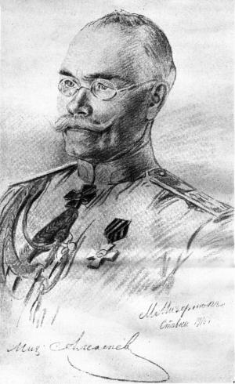

Приобщился на выходных к замечательной книге "Константинополь и проливы. По секретным документам бывшего Министерства Иностранных Дел" изданную в 1926 году и представляющую из себя сборник рассекреченных документов посвященных теме претензий Российской Империи на Босфор и Дарданеллы, а так же подготовке, так и не осуществившейся в связи с Февральской революцией, десантной операции.
Документы весьма наглядно демонстрируют, как несколько лет МИД Российской Империи лелеял надежды на то, что Антанта сдержит свое обещание отдать Проливы России, и нарастающие сомнения по этому поводу. Примечательно и мнение будущего "вождя белого дела" Алексеева, который крайне скептически оценивал перспективы такой операции в 1917 году. Так же в книге затрагиваются вопросы коалиционной дипломатии в рамках Антанты, прожекты на случай различных вариантов завершения войны, и документы указывающие на наличие сепаратных переговоров между Российской и Германской Империями в 1916-1917 годах.
Ниже, два примечательных документа из второго тома, которые выступают отличной рекламой данной книги.
Всеподданнейшая записка российского министра иностранных дел H. Н. Покровского.
Весьма секретно.

Николай Николаевич Покровский
Ход военных событий, ныне развертывающихся на европейском театре войны, может еще в течение этого года поставить нас лицом к лицу с вопросом о ликвидации войны и началом переговоров о мире. В предвидении этого момента Россия, целым рядом дипломатических соглашений со своими союзниками, более или менее наметила направление новых государственных границ, со включением разных земельных приобретений, среди которых первое место занимает, конечно, обладание Константинополем и Проливами. Нисколько не преуменьшая политического значения этих документов, тем не менее было бы ошибочно думать, что мы только ими осуществим наши главные стремления и при каких бы то ни было обстоятельствах получим все то, что в них предусмотрено. Надо иметь е виду, что важнейшее для нас соглашение о Константинополе и Проливах является, в сущности, лишь векселем, выданным нам Великобританией, Францией и Италией, но платеж по нему должен быть произведен третьим лицом — Турцией, которая в соглашении не участвовала и, в зависимости от обстановки на интересующем, ее театре войны, может отказаться удовлетворить наши требования.Несомненно, что состояние географической карты войны к моменту открытия мирных переговоров будет иметь решающее значение для проведения в жизнь политических проектов.
Отсюда для нас вытекает необходимость ко времени заключения мира овладеть Проливами, или же, во всяком случае, настолько к ним приблизиться, чтобы при решении этого вопроса быть в силах оказать должное давление на Турцию. Без этого мы едва ли когда-нибудь получим Константинополъ и Проливы, и самое соглашение о них превратиться в простой клочок бумаги.
Своими заявлениями nrbi et orbi о предоставлении нам Царьграда, с Босфором и Дарданеллами, мы, как ни одна держава в эту -войну, с полной ясностью и откровенностью развернули перед - нашими врагами и друзьями нашу политическую программу, на выполнении которой зиждется будущее политическое значение России на Ближнем Востоке. Настоящая политическая обстановка представляется исключительно - благоприятной для разрешения наших вековых задач и, если мы ею не воспользуемся, то момент, вероятно, будет упущен надолго, и после войны мы очутимся :в положении худшем, чем оно было раньше. Конечно, трудно предугадать, каковы будут итоги мировой борьбы, но во всяком случае нельзя ручаться за то, что среди теперешних союзников не произойдет переоценки политических отношений и не возникнет новая группировка держав, могущая помешать нашему водворению на Проливах. Тогда нам пришлось бы -снова ожидать вспышки европейского пожара для осуществления задачи, которая, как показывает наша. 1000-летняя история, не может быть разрешена в рамках повседневной политической жизни. Если мы теперь не добьемся обладания Проливами, то легко можем оказаться в чрезвычайно невыгодном положении по отношению к Турции, в которой мы возбудили вечное недоверие к нашей политике и будем наталкиваться на ее постоянное противодействие всем нашим начинаниям на Ближнем Востоке. Ни наши теперешние союзники, ни противники никогда не забудут и не простят того, что мы хотели Царьграда и Проливов. Причины, сыгравшие роль при выступлении "Болгарии, и более чем сдержанное отношение нашей старой союзницы, Франции, к вопросу о предоставлении нам Константинополя должны послужить нам уроком и предостеречь от опасных в этом деле иллюзий.
Эти соображения приводят к заключению, что в этом вопросе мы должны исключительно полагаться на свои собственные силы и теперь же приступить к практическому осуществлению нашей задачи движения к Проливам и на Константинополь, если к этому, с точки зрения чисто военной,, не представляется в настоящих условиях препятствий, грозящих конечному успеху наших военных операций. Для этого важного дела необходимо было бы образовать особую экспедицию, которой должно быть поставлено задание произвести высадку на одном из пунктов вблизи Босфора. Повидимому,. наиболее удобным местом для этого является побережье Черного моря около устьев реки Сакарии. Если нам удастся завладеть высотами азиатского берега Босфора, то этой операцией будет в то .же самое время предрешена судьба и его европейского берега. Овладение нами Босфором передаст в наши руки и Константинополь. Но если бы даже нам удалось только высадиться и продвинуться на небольшое расстояние на Вифинийском полуострове и овладеть только частью позиции на Босфоре, то и тогда это бы имело огромное военное и политическое значение при открытии мирных переговоров. Самый, факт нахождения нашего у Босфора и закрепления за нами хотя Оы незначительной части территории поставит нас в исключительно выгодное положение во время переговоров об обеспечении наших интересов.
Окончившаяся «блестящей неудачей» англо-французская экспедиция в Галлиполи представляет собою удивительный «пример того, что подобного рода 'предприятия, несмотря на все технические трудности, дальность расстояния, отсутствие удобных баз, небезопасность морского пути и пр., все же сами по себе оказываются осуществимыми. Англичане и французы оставили Галлиполи не потому, что были вынуждены к этому германо-турками, а потому, что дальнейшее пребывание их там казалось бесцельным, но если бы это входило в их стратегический план, то, вероятно, они могли бы оставаться беспрепятственно до конца войны. Мы находимся в этом отношении в ином, лучшем положении. Близость наших морских баз, удобство сообщений и обеспеченное за нами в последнее время полное господство на Черном море дают, поводимому, перевозку десантного отряда сравнительно безопасной и легко исполнимой. Несмотря на первоначальное недоверчивое отношение к плану высадки около Трапезунда, последний, в конце концов, был выполнен блестяще и совершенно без потерь. Двухлетний опыт черноморского флота и принятые в течение последнего времени меры предосторожности против действий неприятельских судов могли бы явиться гарантией того, что намечаемая экспедиция к берегам Босфора имеет много шансов на успех.
По мнению сведущих лиц, для выполнения высадки на какой-либо пункт азиатского берега Босфора потребуется от 200.000 до 250.000 человек. При существовании одной железной дороги во Фракии и Малой Азии турки не могут сосредоточить для противодействия нашей операции более двух корпусов. По последним военно-морским сведениям, в настоящее время, по совету немцев, турки перенесли свою базу в Малой Азии из Сиваса на юг, к линии Диарбекир-Алеппо, считаясь именно с угрозой нашей высадки. Для приведения в исполнение намечаемого плата необходимо, чтобы была образована совершенно особая военно-морская экспедиция, во главе которой должен быть поставлен ответственный начальник. При нем следует назначить для руководства морскими операциями высшего морского офицера. Задание флота будет заключаться в обеспечении перевозки десантного отряда и снабжении его всем необходимым. Предварительно выполнения десантной операции должна быть произведена тщательная военно-морская разведка того района, «который будет предназначен для высадки. Прежде отправления для исполнения возложенной на нее задачи, экспедиция должна быть в полной мере обеспечена совершенно достаточным количеством провианта и военного снаряжения для того, чтобы не пришлось решать этих вопросов и не терять времени на это тогда, когда наши войска уже будут .находиться по ту сторону Черного моря. Эти три элемента: выделение экспедиции в отдельную часть, с предоставлением в ее распоряжение до 250.000 людей, соответствующее артиллерийское и интендантское оборудование и производство тщательной разведки, повидимому, являются существенными условиями для ее успеха. На снаряжение и оборудование такой экспедиции потребуется не менее 6 — 7 месяцев. Вследствие сего, к этому надо было бы приступить немедленно с таким расчетом, чтобы все было готово не позже октября, т.- е. к моменту, когда может наступить решительный перелом в ведении военных операций у наших союзников.
Но настоятельная необходимость в организации подобной экспедиции для того, чтобы утвердиться у Босфора, подсказывается нам и политическим положением, которое может создаться к началу мирных переговоров. Мы не должны упускать из виду, что понятие полной победы, о которой много раз союзные правительства заявляли, на практике представляется не всем союзникам одинаковым. Очевидно, с практической точки зрения, каждое союзное правительство будет считать победу полной постольку, поскольку оно достигнет осуществления своих притязаний. Поэтому, если по ходу военных событий окажется, что военные успехи французов и англичан на западном фронте дадут удовлетворительные, по их понятию, результаты, то очень мало надежды рассчитывать на то, чтобы они продолжали войну для. отвоевывания в пользу России Константинополя и Проливов. Вследствие сего, мы должны сами принять меры к тому, чтобы обеспечить себе благоприятное решение интересующих нас вопросов.
В заключение дерзаю привести по этому поводу высочайшую резолюцию в бозе почивающего родителя вашего императорского величества на всеподданнейшей записке бывшего посла в Константинополе Нелидова о необходимости занятия нами Проливов, представленной в декабре 1882 гада: «Все это весьма дельно и толково. — Дай бог нам дожить до этой отрадной и задушевной для нас минуты. Я не теряю надежды, что рано или поздно, а это будет и так должно быть. Главное, — не терять времени и удобного момента».
О вышеизложенном приемлю смелость доложить вашему императорскому величеству .
21 февраля/6 марта 1917 г.
Покровский.
* * *
Как видим, в МИДе к весне 1917 года, когда страна уже стояла на пороге Февраля, который уничтожит Российскую Империю, не очнеь то доверяли обещаниям Англии и Франции, и по мнению министра, если бы Россия сама не захватила Проливы, то ей бы их никто не отдал. Но как обстояло дело с подготовкой самостоятельной операции? Ниже, мнение начальника штаба Верховного Главнокомандующего генерала Алексеева об этих планах.
Директор дипломатической канцелярии при штабе верховного главнокомандующего Н. А. Базили российскому министру иностранных дел H. Н. Покровскому.
Письмо.
26 февраля/ll марта 1917 г.
Весьма секретно.
Николай Александрович Базили

Михаил Васильевич Алексеев
Милостивый государь Николай Николаевич,
Согласно данному мне поручению, я по приезде в Ставку представил генерал-адъютанту Алексееву копию всеподданнейшей записки вашего высокопревосходительства по вопросу о Проливах. При этом я подчеркнул все значение политической части записки, в которой изложены соображения, по которым необходимо ради осуществления наших целей войны ко времени заключения мира фактически овладеть Проливами.. В отношении более технической части записки я обратил внимание начальника штаба, что она имеет лишь субсидиарное значение. Как я и опасался, внесенные в означенную записку технические подробности вызвали со стороны генерала Алексеева решительные возражения.
Начальник штаба поручил мне довести до сведения вашего высоко-, превосходительства следующие соображения по содержанию вышеупомянутой записки. В разговорах с С. Д. Сазоновым, так и особенно с Б. В. Штюрмером, генерал высказывал определенное мнение, что объявлять «urbi et orbi» о предоставлении нам Константинополя и Проливов не следует. По твердому его убеждению, надо сначала подойти к выполнению столь крупной военной задачи, обеспечить ее успех, а потом уже говорить о ней. На это Б. В. Штюрмер возражал, указывая, будто оглашение признания нашими союзниками наших прав на Проливы необходимо для успокоения общественного мнения России, и, к сожалению, эта тонка зрения возобладала.
Переходя к вопросу о практическом осуществлении наших задач на Проливах, начальник штаба подчеркнул, что разработка плана такой операции и, в частности, определение срока ее выполнения возможны лишь при самом полном осведомлении как о наличных средствах, так и о требуемых средствах для намеченного предприятия. В настоящее время наш фронт, не считая Кавказа, представляет непрерывную линию окопов и укреплений, на протяжении 1.650 верст. В среднем на каждую версту приходится 1.500 человек бойцов, при скромном числе орудий, числе, значительно уступающем техническим средствам противника. Поэтому генерал Алексеев считает решительно невозможным до существенного поражения противника на нашем западном фронте уменьшить там число войск. Судьба настоящей войны зависит от нанесения решительного удара немцам или от приведения их к убеждению, что они долее вести борьбу не могут. Без этого немцы сами находятся в положении, угрожающем нашим жизненным направлениям—на Петроград, Москву и юг России.
Ответственные исполнители не могут поэтому снять с западного фронта, до решения там участи войны, 200 — 250 тысяч человек для босфорской экспедиции. Генерал Алексеев отметил затем крайнюю ограниченность наших транспортных средств в Черном море и полную невозможность увеличить эти средства сверх имеемых. Необходимо помнить, что на этих транспортных средствах лежит питание нашей кавказской армии. Эти же транспорты должны будут одновременно с переброокой войск на Вифинейский полуостров начать туда же перевозку войскам продовольствия, артиллерийских запасов, укомплектования. При ограниченности наших транспортных средств, генерал Алексеев считает весьма трудной переброску с северного побережья Черного моря на Вифинейский полуостров хотя бы в три рейса 250.000 бойцов т.е. почти 25 дивизий, с артиллерией, обозами, необходимыми тыловыми запасами.
Начальник штаба возражает против ссылки на трапезундскую операцию. У Трапезунда в боевых условиях высадилось всего 2 — 3 батальона, тогда как главные силы наступали по сухому пути, и лишь потом уже в мирных условиях в Трапезунд перевезено было морем около одной дивизии. Десант в 2-— 3 батальона нельзя приводить в пример грандиозного предприятия переброски армии в 200 — 250 тысяч человек, в пример предприятия, подобного которому еще не было, в военной истории. Босфорскую экспедицию нельзя также сравнивать с галлиполийской операцией. Англо-французы, владея островом Мудрооом, располагали базою в 30 милях от Галлиполийского полуострова, тогда как Вифинейский полуостров отстоит от Севастополя на 230 миль.
Указав на неправильность технических данных, использованных министерством при составлении вышеуказанной записки, начальник штаба высказал пожелание, чтобы ранее представления его императорскому величеству докладов, содержащих предположения о военных операциях, таковые сообщались на заключение ответственных исполнителей, которые поневоле имеют дело с ограниченными средствами.
В заключение генерал Алексеев вернулся к своей основной мысли, что только после поражения нашего главного и сильного врага можно предпринять поход на Константинополь и что при этом обстановка укажет, как это можно будет сделать.
К изложенному почитаю долгом присовокупить, что по весьма доверительным сведениям, сообщенным мне в штабе, подготовительные работы по выполнению десантной операции: к тому времени, когда для нее наступит час, энергично продолжаются. Для того, чтобы вполне закончитъ эту подготовку, морскому ведомству нужно три месяца. Но при существующих транспортных средствах не может бытъ речи о том, чтобы перевезти и потом питать экспедиционную армию в 200 — 250 тысяч человек. Максимальное количество войск, до которого можно было бы довести такую армию (примерное количество войск, до которого можно было бы довести такую армию (при
перевозке, конечно, -в несколько рейсов), достигало бы, примерно, 9 дивизий или 130.000 человек. И при этом пришлось бы прекратить на Черном море всякие морские перевозки, не связанные с этой экспедицией. Прошу ваше высокопревосходительство верить в глубокое уважение искренне преданного
Н. Б а з и л и.
Через несколько дней после встречи с Базили, Алексеев будет в числе тех, кто откажет в поддержке Николаю II направив ему известную телеграмму, которая станет одним из решающих аргументов в пользу отречения.
Беспорядки в Москве, без всякого сомнения, перекинутся в другие большие центры России, и будет окончательно расстроено и без того неудовлетворительное функционирование железных дорог. А так как армия почти ничего не имеет в своих базисных магазинах и живёт только подвозом, то нарушение правильного функционирования тыла будет для армии гибельно, в ней начнется голод и возможны беспорядки. Революция в России, а последняя неминуема, раз начнутся беспорядки в тылу, — знаменует собой позорное окончание войны со всеми тяжелыми для России последствиями. Армия слишком тесно связана с жизнью тыла, и с уверенностью можно сказать, что волнения в тылу вызовут таковые же в армии. Требовать от армии, чтобы она спокойно сражалась, когда в тылу идет революция, невозможно.
Нынешний молодой состав армии и офицерский состав, в среде которого громадный процент призванных из запаса и произведенных в офицеры из высших учебных заведений, не дает никаких оснований считать, что армия не будет реагировать на то, что будет происходить в России…. Пока не поздно, необходимо принять меры к успокоению населения и восстановить нормальную жизнь в стране.
Подавление беспорядков силою, при нынешних условиях, опасно и приведет Россию и армию к гибели. Пока Государственная Дума старается водворить возможный порядок, но если от Вашего Императорского Величества не последует акта, способствующего общему успокоению, власть завтра же перейдет в руки крайних элементов и Россия переживет все ужасы революции. Умоляю Ваше Величество, ради спасения России и династии, поставить во главе правительства лицо, которому бы верила Россия и поручить ему образовать кабинет. В настоящее время это единственное спасение. Медлить невозможно и необходимо это провести безотлагательно.
Докладывающие Вашему Величеству противное, бессознательно и преступно ведут Россию к гибели и позору и создают опасность для династии Вашего Императорского Величества
Чуть позже последовало уже коллективное письмо высшего генералитета http://school.rusarchives.ru/revolyutsiya-1917-goda/telegramma-nachalnika-shtaba-verkhovnogo-glavnokomanduyushchego.html, за которым последовало отречение.

Вскоре монархия падет, Российская Империя в сентябре того же года прекратит свое существование, что вкупе с идущей гражданской войной, поставило крест на предприятии по приобретению Проливов и обещаниях Англии и Франции, которые они собственно и не очень то желали выполнять. Тот случай, когда желания не совсем совпали с возможностями. А ведь Дурново в своей знаменитой записке Николаю II перед началом войны предупреждал, что именно этим все и закончится.
PS. В двухтомнике очень много интересных документов, для любителей истории Российской Империи, Первой мировой войны и Февральской революции строго рекомендую к ознакомлению.
http://knigohran.ru/?q=konstantinopol-i-prolivy-po-sekretnym-dokumentam-byvshego-ministerstva-inostrannyx-del-tom-i - скачать первый том
http://knigohran.ru/?q=node/153 - скачать второй том